Префектура Коти · восток префектуры · вера и ремёсла
Идзанаги-рю: вера гор Коти и ночь в доме кузнеца
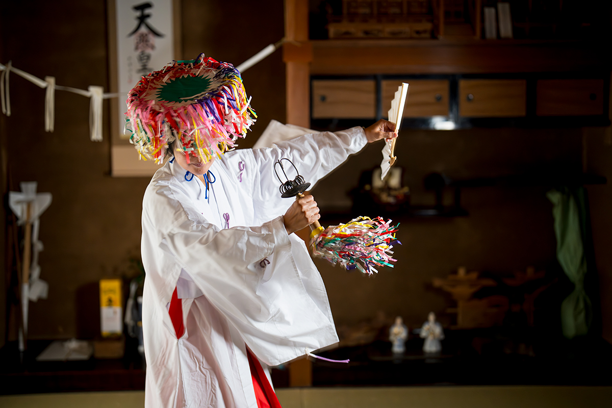
В горах восточного Коти есть вера, которой не учат по книгам: знание переходит от мастера к ученику, а обряды совершают обычные лесорубы и земледельцы. Рядом с этой верой можно переночевать в старом доме кузнеца, увидеть священные танцы и вырезать из бумаги фигуру для богов.
Народная вера
Что такое идзанаги-рю
Идзанаги-рю называют народной верой, которая живёт в горной местности Монобэ в городе Ками, у самой границы с префектурой Токусима. Когда она возникла, точно неизвестно: одни относят её начало к Средним векам, другие к ещё более ранним временам. Это сплав разных учений, где смешались учение инь и ян, горная аскеза, синто и буддизм.
У веры нет ни основателя, ни единой общины. Знание передаётся от наставника к ученику: служителей называют таю, и они не оканчивают никаких школ, а перенимают обряды у мастеров. Таю не живут только верой, обычно они занимаются здесь же лесоводством или земледелием. Нет и наследственности: желающий сам становится учеником наставника, ходит с ним на обряды, помогает и, получив «разрешение», становится самостоятельным.
У каждого таю своя сильная сторона, и считается правильным учиться сразу у нескольких наставников, набирая разные знания. Обряды закрывают самые разные случаи жизни: праздники домашних и местных богов, «успокоение гор», когда разбушевались горы и реки, и молитву о больных, где против злых духов используют особое заклинание.
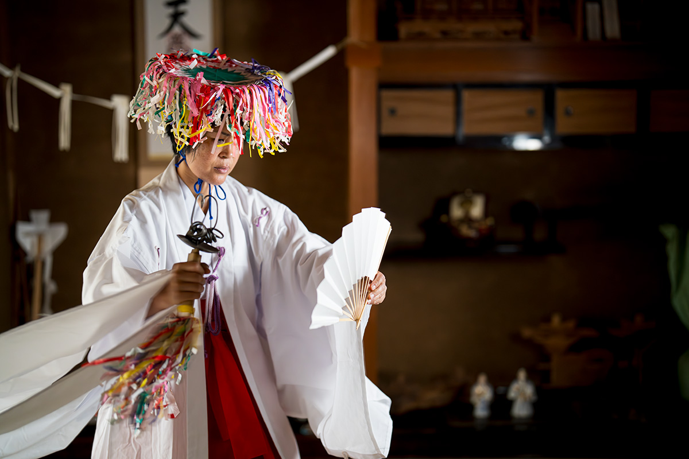
Танцы
Священные танцы идзанаги-рю
Самая зрелищная часть обряда это танец кагура. Его исполняют, чтобы порадовать богов, и особенно угодно им, когда таю читает вслух «саймон», обрядовый текст о происхождении и родословной божества. Кроме семи основных саймонов таю приходится помнить ещё множество: для успокоения, для защиты от злых сил и для других случаев.
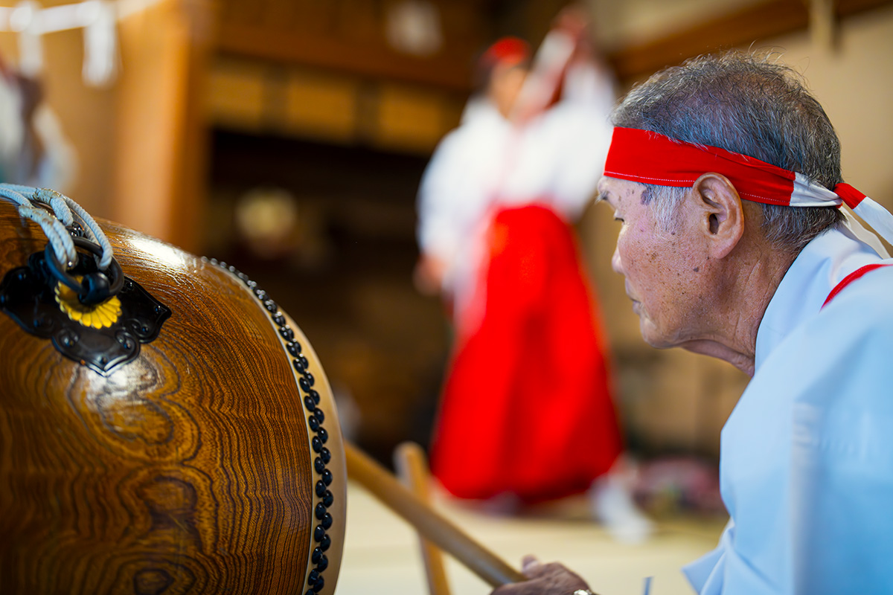
В идзанаги-рю передают десять видов танца. У каждого свой смысл и свой обрядовый предмет.
- Танец посоха и веера.
- Танец печатей и созерцания.
- Главный обряд.
- Танец веера.
- Танец с перевязью-тасуки.
- Танец меча.
- Танец с лопаткой-хэги.
- Танец с копьём.
- Танец божества Хогамия.
- Танец лука.
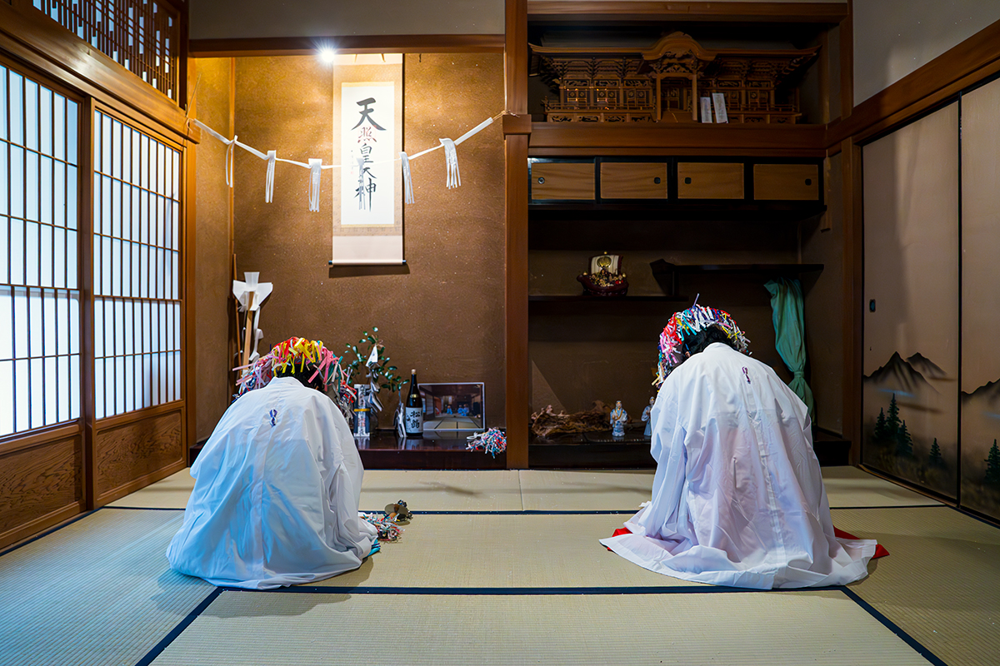
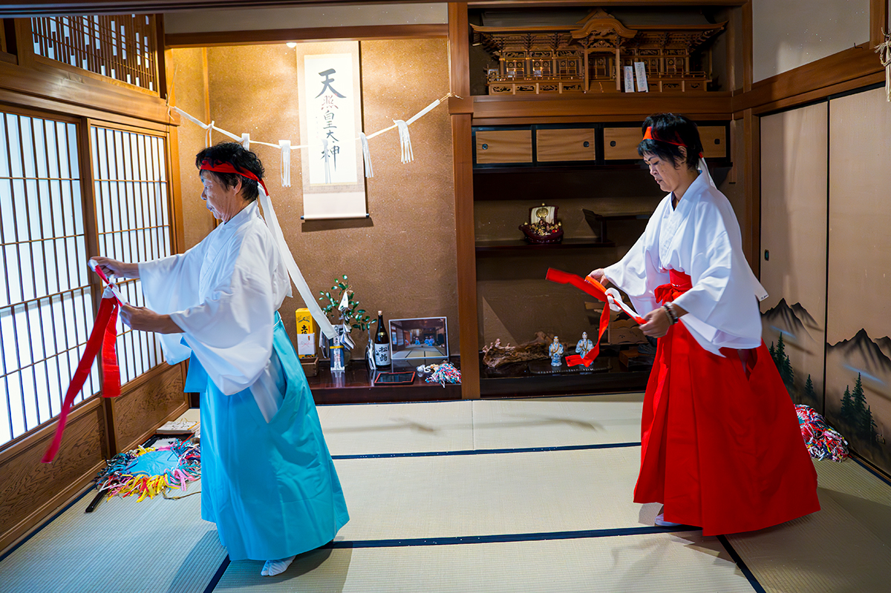
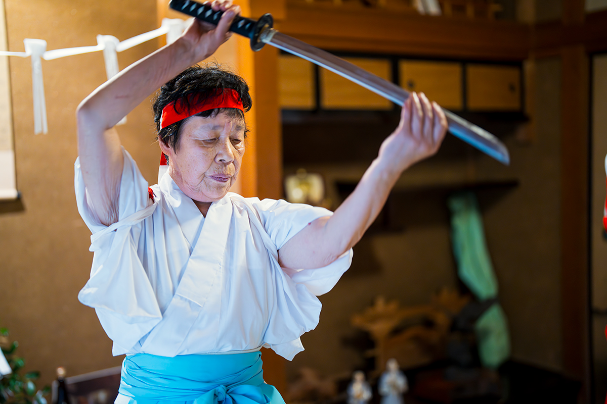
Обрядовые бумаги
Вырезать фигуру для богов
К обряду таю сам вырезает из бумаги «гохэй», обрядовые знаки, в которых, как считается, селятся божества. Формы зависят от назначения: знаков около двухсот, среди них есть и защитные, и такие, что запирают злых духов. Иные выходят сложными и загадочными, иные почти игрушечными, и у каждого мастера своё выражение.
В «Маки-но ядо» можно самому сесть за этот труд: с макетным ножом в руках вырезать знак под присмотром наставника. Во время съёмок гости делали «знак согласия» между богом гор и богом воды. Режут вручную, сверяясь с образцом, поэтому у каждого мастера знак выходит со своим лицом. Готовую работу забирают домой. Занятие длится около часа и стоит 1 500 иен с человека.
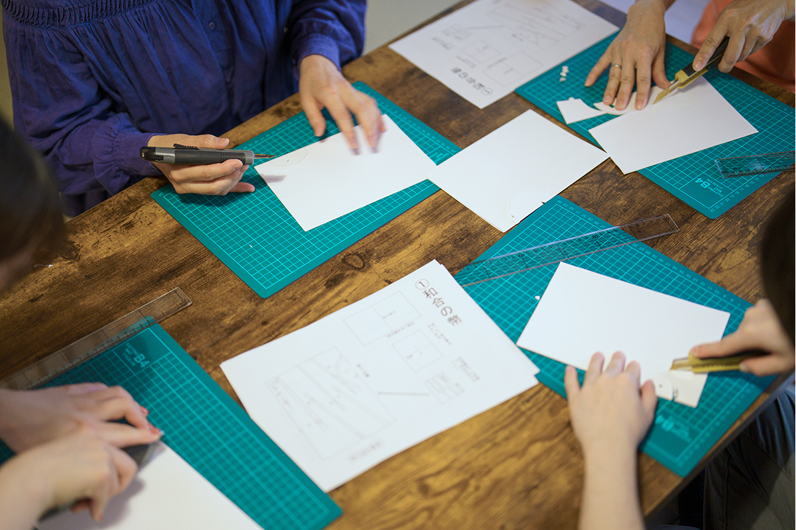
Гостевой дом
«Маки-но ядо»: ночь в доме кузнеца
Остановиться рядом с этой верой можно в «Маки-но ядо» в Монобэ. Это старый дом кузнеца, которому 80 лет: его выкупили и отремонтировали, сохранив балки, высокие потолки и резные детали, а санузлы сделали заново. Дом сдают целиком, одной группе, чтобы гости жили здесь как в собственном доме.
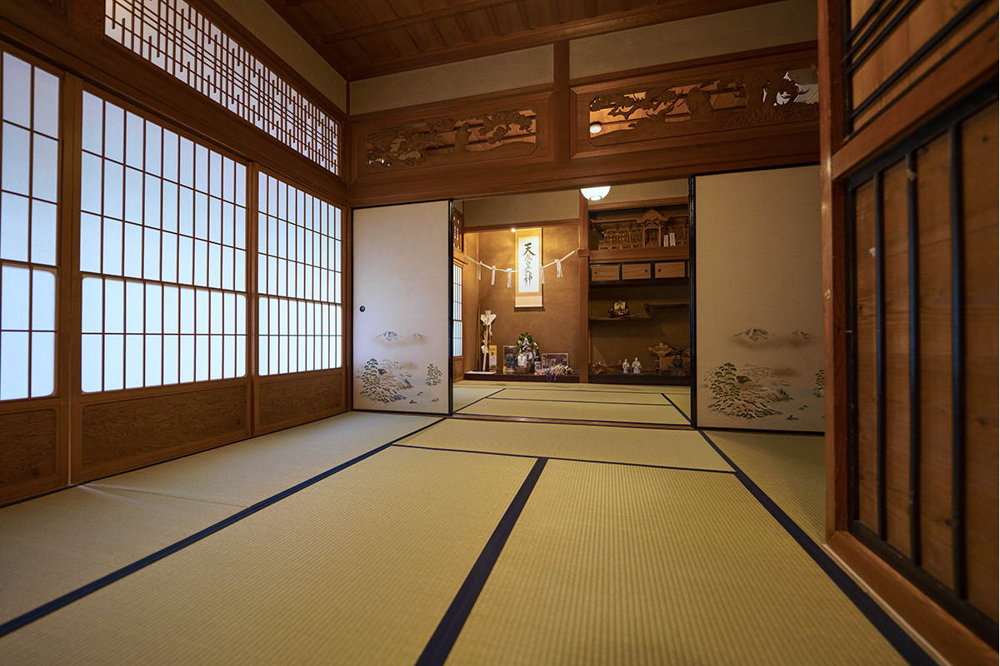
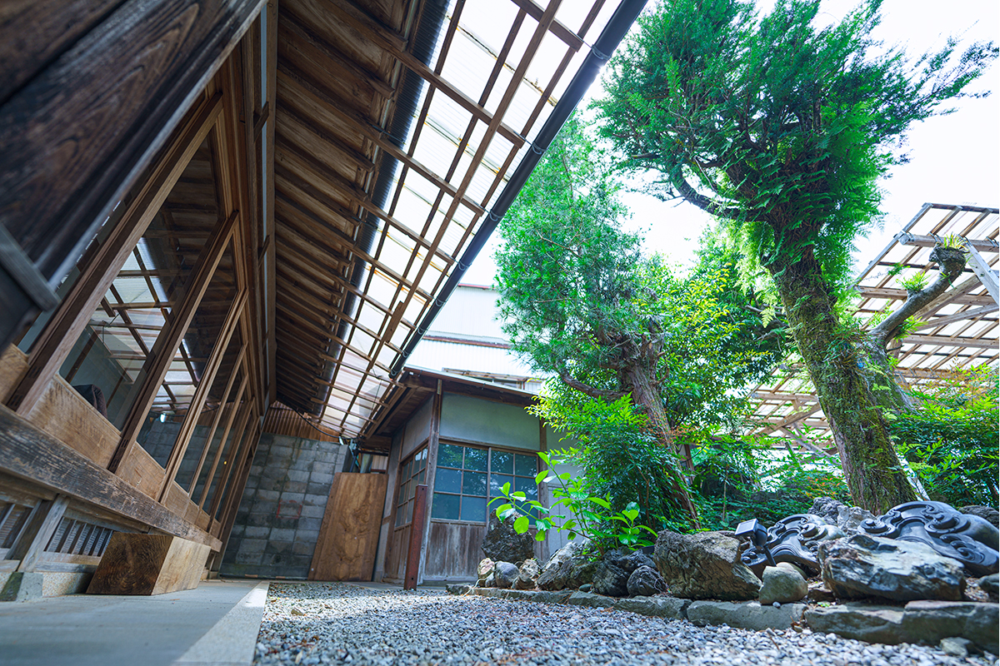
Хозяйка дома переехала в Монобэ после замужества и много лет работала с культурным наследием. Ей было жаль смотреть, как в округе пустуют хорошие старые усадьбы, и хотелось рассказать о здешних местах. Так и появился дом для гостей. Вместе с обществом сохранения кагура идзанаги-рю здесь устраивают и настоящие представления священных танцев.
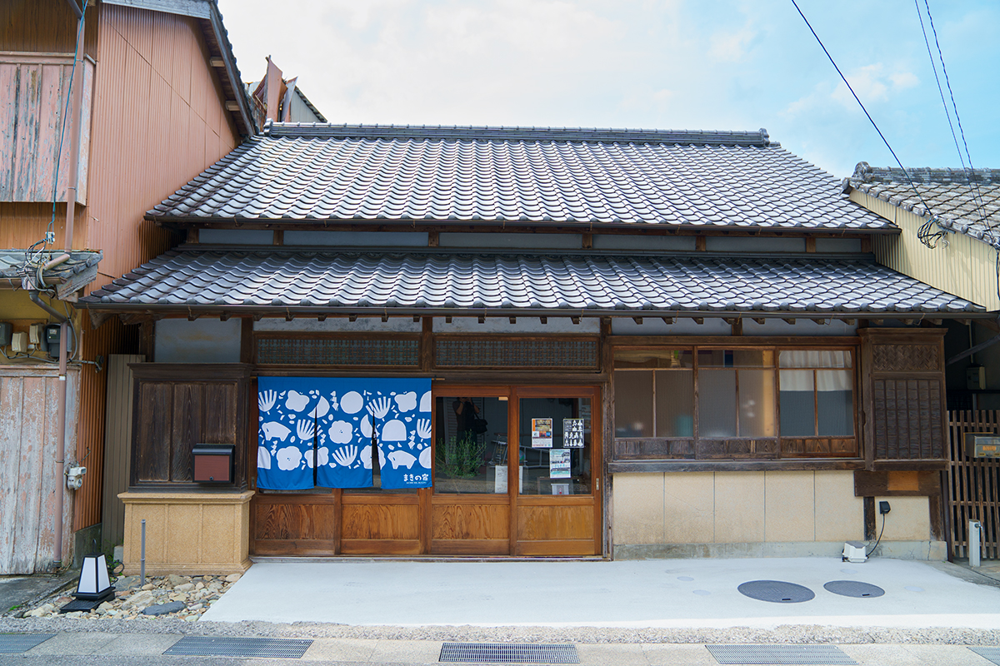
Ужин
Стол по-котийски
После обрядов здесь садятся за стол. Коти славится праздничным блюдом «савати-рёри»: угощение выкладывают на большое блюдо, и все берут с него понемногу. В горном Монобэ его готовят по-своему, кладут маринованную скумбрию симэ-саба, речную рыбу аю, овощи, юдзу и конняку, а из этого собирают деревенские суши. Блюдо стоит 12 000 иен с человека, и заказывать его нужно заранее. Для небольшой компании предложат коробку с ассорти, где тоже будут аю и конняку.
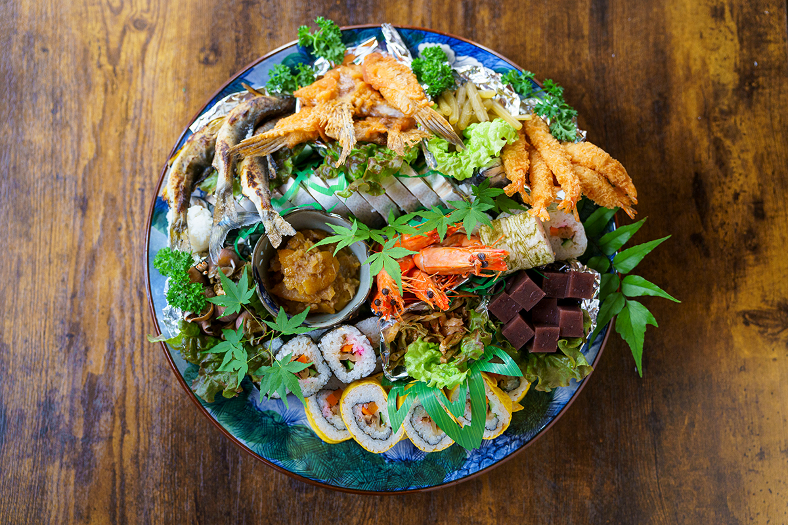
«Один исследователь говорил, что идзанаги-рю уцелела потому, что смешала разные веры и приспособила их к здешним местам. Если так подумать, это очень терпимая вера, и к ней как-то проникаешься».
Хозяйка гостевого дома «Маки-но ядо»
Гостевой дом «Маки-но ядо»
- Адрес
- префектура Коти, город Ками, Монобэ-тё, Ототи, 1469-2
- Телефон
- +81 887-53-9480
- Номера
- 1 дом
- Цены
- от 8 000 иен за ночь без питания (с налогом)
- Заезд
- 16:00
- Выезд
- 10:00
- Питание
- ужин японский, завтрак европейский
- Как добраться
- на машине около 45 минут от съезда Нанкоку; на автобусе около 40 минут от станции Коти
- Сайт
- makinoyado.com